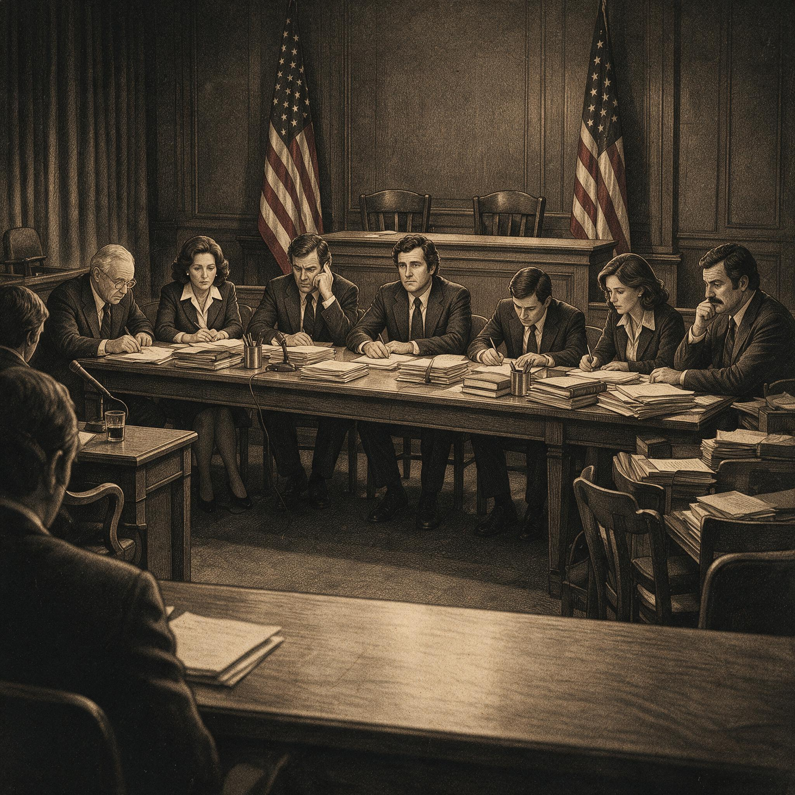

第 10 章
指南的妥协
桌上摊开的是一份打印稿，封面上印着“营养与您的健康：美国居民膳食指南”的字样，日期标注为1980年2月。
这份七页的小册子将成为美国历史上第一版联邦膳食指南，但它目录页上列出的七条建议中，没有一条单独提到糖。不是被否决了，而是从未单独存在过。
糖最终出现在第四条建议的附属说明里——“避免过多的糖”——夹在“避免过多的脂肪、饱和脂肪和胆固醇”之后，与“避免过多的钠”并列。在整份指南中，“脂肪”一词出现了二十余次，“饱和脂肪”出现了八次，“胆固醇”出现了九次。而“糖”作为独立条目：零次。
这正是对前章结尾问题的直接回答：替代“减少糖摄入”的，是“避免过多的糖”这样模糊、依附、缺乏具体行动指向的措辞。

1970年代美国国会听证会现场氛围
AI 生成插图，非史实影像。
这份文件是怎么变成这个样子的，要从1978年秋天说起。那年九月，美国农业部助理部长卡罗尔·福尔曼的办公室里收到了一份备忘录。发件人是农业部营养政策协调员，主题是“膳食指南起草委员会的组成”。
备忘录建议委员会成员应当涵盖营养学、流行病学、食品科学和消费者教育等领域的专家，同时提醒福尔曼注意一个敏感问题：委员会中是否应当包括曾参与麦戈文委员会《膳食目标》起草的科学家。备忘录写道：“这些人已经公开表态，他们的参与可能使指南被视为对《膳食目标》的简单背书，而非独立的科学评估。”建议选择“在相关领域具有权威性但未深度卷入此前政策争论”的专家。福尔曼在页边批注：“同意。请提供候选人名单。”
这份备忘录确立了一个基调：指南必须看起来是科学过程的产物，而非政治过程的延续。但正是这个“看起来”，为接下来的两年定下了规则——所有参与者都必须用科学的语言来争取政治目标，而谁定义了“科学证据充分”的标准，谁就掌握了主动权。
起草委员会最终由十四名科学家组成，主席是明尼苏达大学营养学教授D.M.赫格斯泰德。这个选择本身就带有历史重量：赫格斯泰德是安塞尔·凯斯的长期合作者，曾参与“七国研究”的数据分析，是脂肪假说最坚定的支持者之一。他的任命并非农业部单方面的决定——卫生与公众服务部在联合制定指南的过程中拥有共同决定权，而该部的营养政策官员中，多人曾在国家卫生研究院受训，与脂肪假说的研究传统有着制度性的亲缘关系。
委员会第一次全体会议于1979年1月在华盛顿召开。会议记录显示，议程的第一项不是讨论具体营养素，而是讨论“证据标准”——什么类型的研究可以被用来支撑一项面向全体美国人的膳食建议。
正是这个看似程序性的议题，决定了后续所有争论的走向。赫格斯泰德在开场发言中提出了一个框架：指南应当基于“科学共识”，而非“个别研究”。他解释道，营养流行病学的研究结果常常互相矛盾，如果要求每一项建议都有随机对照试验的支持，那么几乎无法制定任何膳食指南。因此，委员会应当依赖“专家综述”——由权威机构或专家组对现有文献进行系统评估后形成的判断。
这个提议听起来合理，甚至是科学上的审慎。但它隐含了一个关键假设：专家综述是中立和全面的。
委员会成员、哈佛大学营养学教授弗雷德里克·斯泰尔对此提出了质疑。根据会议记录，斯泰尔指出：“综述的质量取决于其覆盖范围和方法论。如果我们依赖的综述本身就排除了某些研究传统，那么共识就只是部分人的共识。”
斯泰尔没有点名，但在场的人都明白他指的是什么。过去十五年间，关于膳食与心脏病关系的综述主要由两类机构生产：一是美国心脏协会，其专家委员会长期由脂肪假说支持者主导；二是国家卫生研究院资助的专家组，同样以凯斯学派的研究者为核心。
而那些质疑脂肪假说、强调糖代谢作用的研究——约翰·育克金的临床试验、彼得·库奥的流行病学调查、乔治·曼恩对马赛人的观察——在这些综述中要么被忽略，要么被评价为“方法学存在缺陷”或“证据不足”。
斯泰尔的发言被记录在案，但没有改变委员会的工作方式。会议最终决定，指南起草将主要依据三份已有综述：美国心脏协会1978年的膳食建议、国家卫生研究院1977年的肥胖与健康共识报告，以及美国实验生物学学会联合会1979年的营养建议。
这三份文件有一个共同特征：它们都明确建议减少脂肪摄入，而在糖的问题上措辞谨慎或完全回避。
糖业的参与正是在这个节点上变得清晰可见——不是通过粗暴的干预，而是通过此前二十年间系统性地塑造了这些综述所依赖的证据基础。
1979年3月，糖业协会（其前身即糖业研究基金会）向起草委员会提交了一份正式评议文件，标题为“关于膳食指南中糖的建议的科学依据”。这份长达三十二页的文件由糖业协会聘请的科学顾问撰写，其核心论点可以用一句话概括：现有科学证据不足以支持将糖列为心血管疾病或肥胖的独立风险因素。
文件的结构值得仔细审视。它没有否认糖的过量摄入可能与健康问题相关，而是将争论引向了一个更微妙的层面：相关性不等于因果性。文件列举了十二项流行病学研究，指出其中八项未能在控制总热量摄入后显示糖与心脏病之间的独立关联；引用了三项临床试验，强调它们“未证明减少糖摄入可独立降低血脂水平”；最后得出结论：在更多研究完成之前，膳食指南不应将糖单列为限制对象，而应将其纳入“总热量平衡”的框架中讨论。这份评议文件的语言是冷静的、科学的、看似合理的。
它没有攻击任何人，没有质疑任何研究的诚信，只是反复强调一个词：“证据不足”。
但“证据不足”这个判断本身就是一种立场。在科学政策中，决定“证据何时足够”从来不是一个纯粹的技术问题——它取决于你要求什么样的证据、谁来提供这些证据、以及你对“犯错”的方向性偏好。如果你更担心错误地指控某种食物（第一类错误），你会设置很高的证据门槛；如果你更担心错过真正的健康风险（第二类错误），你会在证据尚不完全时采取预防措施。糖业协会的策略是将政策制定的天平推向第一类错误的方向：宁可放过，不可错怪。
这份评议文件并非孤立的行动。1979年4月，路易斯安那州参议员拉塞尔·朗的办公室致信农业部，询问膳食指南起草的进展情况，并特别提到“糖业在路易斯安那州经济中的重要地位”。信中没有提出任何具体要求，只是表达了对“科学过程的完整性”的关注。
但在一份由国会监督下的行政部门制定的政策文件中，这种来自国会的“关注”本身就是一种压力信号。路易斯安那州是甘蔗种植大州。
朗参议员曾任参议院财政委员会主席，对农业部的预算拥有管辖权。他的办公室发出的任何信函，都会被农业部的官僚体系认真对待——不是因为它包含威胁，而是因为它提醒了收信人一个制度性事实：膳食指南的制定者所在的部门，其预算和授权来自那些代表特定产业利益的国会委员会。
类似的压力也来自其他方向。1979年5月，全国牲畜牛肉协会和全国乳制品委员会分别提交了评议意见，批评指南草案中关于减少饱和脂肪和胆固醇的建议“可能误导消费者认为所有动物性食品都不健康”。但与糖业不同的是，肉类和乳制品行业面对的是一个更分散的对手：脂肪假说已经深度嵌入了美国心脏协会、国家卫生研究院和大部分医学院的教学体系。要对抗脂肪假说，他们需要推翻的不是一份指南草案，而是整个学术传统。
糖业则不必面对这种困境。因为糖假说从未成为主流——这正是1967年哈佛综述及其后续影响的直接后果。二十年前，糖业研究基金会资助了三位哈佛科学家撰写一篇综述，引导科学界的注意力从糖转向脂肪。
那篇综述没有伪造数据，没有收买结论，只是选择性地组织了已有研究，构建了一个有利于糖的叙事。二十年后，当膳食指南的起草者寻找“科学共识”时，他们找到的是已经被那个叙事塑造过的文献基础。
这不是阴谋的效果。这是议程捕获的正常运作方式。1979年6月，起草委员会召开了第二次全体会议。这次会议的焦点是具体营养素建议的措辞。
记录显示，委员会成员、加州大学戴维斯分校的营养学家谢尔登·马根提出了一个动议：在指南中加入关于糖的独立条目。马根的论据来自两方面。首先，他引用了育克金在1972年出版的《纯净、白色和致命》一书中汇总的临床和流行病学证据——尽管育克金本人从未被邀请加入起草委员会。其次，他引用了美国农业部自己的消费调查数据：美国人平均每天摄入的添加糖超过总热量的15%，其中约三分之一来自含糖饮料。马根认为，这一消费水平已经构成了公共卫生关切，指南应当给出明确建议。
会议记录显示，马根的提议引发了长达两小时的争论。反对意见集中在三个层面。
第一个层面是证据充分性。赫格斯泰德回应说，育克金的研究虽然值得关注，但未能得到后续研究的一致证实。“我们不能基于孤立的研究制定面向两亿美国人的膳食建议，”他说，“如果我们对糖的证据标准放低到这种程度，那么对其他营养素的建议也将失去科学权威性。”
这个论证的力量在于它的对称性：它听起来像是在维护科学的严格性，而不是在为特定产业辩护。
但它回避了一个问题：为什么对脂肪的证据标准可以比糖更低？到1979年为止，关于脂肪与心脏病关系的随机对照试验同样稀少且结果不一——“七国研究”是观察性的，“明尼苏达冠状动脉调查”未能证明降脂干预可减少死亡率——但脂肪假说仍然被赫格斯泰德及其同事们视为足够坚实。
这就是证据门槛差的实际运作：建立一项膳食建议所需的证据强度，远低于推翻它所需的证据强度。一旦脂肪假说在1960年代被接受为“合理共识”，后续的研究更多地是在这一框架内积累细节，而非检验其根本假设。而糖假说从一开始就被置于“需要更多证据”的位置上——这个位置意味着它永远无法获得足够的资源来达到与对手同等的证据水平。
第二个层面的反对来自实用考量。委员会成员、消费者教育专家琼·古索指出，如果指南单独列出糖的建议，可能会引发食品工业的强烈反弹。
“看看麦戈文报告发布后发生了什么，”她提醒委员会，“我们正在制定的文件将直接影响学校午餐计划和食品券政策。如果我们过于激进地限制糖，国会可能会干预整个指南的发布。”
古索的担忧并非空穴来风。麦戈文报告在1977年发布后确实遭遇了来自食品工业的政治阻力，导致第二版中对盐和糖的建议被弱化。
但古索的发言揭示了一个更深层的机制：政策的可行性不仅仅取决于科学证据的强度，还取决于政治成本的分布。对脂肪的明确限制主要影响肉类和乳制品行业——这些行业在国会中有强大的代表，但它们面对的是一个已经制度化的科学共识。对糖的限制主要影响制糖业和含糖饮料生产商——这些行业的游说资源同样强大，而它们面对的是一个仍处于争议中的假说。从官僚的角度看，在糖的问题上保持模糊是一个低成本的选项：它避免了与强大利益集团的正面冲突，同时可以用“科学证据不足”来正当化这种回避。
第三个层面的反对来自概念框架本身。委员会成员、塔夫茨大学营养学教授约翰·德怀尔认为，“糖”这个概念太宽泛了。“天然存在于水果和牛奶中的糖与添加在加工食品中的精制糖在代谢效应上是不同的，”他说，“如果我们笼统地说‘避免过多的糖’，可能会误导消费者减少水果和奶制品的摄入。”
这个论证在营养学上是成立的。但它也可以成为一个方便的借口：因为概念界定存在困难，所以干脆不单独提出建议。
委员会最终采取的做法正是如此——将糖纳入“避免过多”的总建议下，但在指南正文中不区分天然糖和添加糖，不提供具体的摄入量上限，不使用“减少”这样具有明确行为指向的动词。
1979年8月，指南草案的第一版在委员会内部传阅。这份草案包含了七条核心建议：吃多种食物；保持理想体重；避免过多的脂肪、饱和脂肪和胆固醇；吃含有足够淀粉和纤维的食物；避免过多的糖；避免过多的钠；如果饮酒，要适量。
注意第五条：“避免过多的糖”。这是糖第一次也是最后一次以独立条目的形式出现在联邦膳食指南的草案中。但它只存活了两个月。
1979年10月，农业部与卫生与公众服务部的高层官员召开了联席会议，审议指南草案的政治可行性。
会议记录没有公开全文，但根据后来通过《信息自由法》申请获得的片段显示，讨论集中在三个可能引发国会反弹的问题上：饱和脂肪的限制可能被视为对畜牧业的攻击；钠的限制可能引发加工食品行业的反对；而糖的限制则被特别标注为“需要进一步咨询利益相关方”。
“利益相关方”是一个官僚术语。在这个语境下，它主要指制糖业、玉米高果糖浆生产商、软饮料协会以及使用大量添加糖的加工食品企业——谷物早餐、糖果、烘焙食品、罐头水果、调味酱料。这些行业加起来代表着数百亿美元的产值和数十万个就业岗位。它们不会被动地等待政府发布可能损害其利益的膳食建议。
1979年11月，食品加工者协会——一个代表大型食品制造商的行业组织——向农业部提交了一份长达四十七页的评议意见。这份文件的核心论点是：膳食指南不应将任何单一营养素或食品成分标记为“有害”，因为健康取决于整体膳食模式而非个别成分。
这是一个巧妙的框架转换：它将问题从“美国人是否摄入了过多的添加糖”转变为“科学是否证明了添加糖本身的独立危害”。前者是一个公共卫生问题，可以基于消费数据和流行病学关联做出回答；后者是一个毒理学问题，要求比现有证据更高的证明标准。食品加工者协会的评议还包含一个具体的建议：将“避免过多的糖”修改为“避免过量的总热量”。这个修改看似只是措辞调整，实际上彻底改变了建议的政策含义。
“避免过多的糖”暗示消费者应该减少某些特定食品的摄入；“避免过量的总热量”则是一个普遍适用的健康建议，不会对任何特定产业构成威胁。1980年1月，起草委员会举行了最后一次会议，讨论外部评议意见并确定最终文本。会议记录显示，关于糖的建议引发了最长时间的讨论，但最终的投票结果却是压倒性的：十二票赞成将糖从独立条目中移除，一票反对，一票弃权。投反对票的是马根。他在会后的一份备忘录中写道:“委员会的决定不是基于科学判断，而是基于政治考量。
我们有足够的证据告诉公众减少精制糖的摄入，但我们选择了更安全的措辞。”这份备忘录后来被收入农业部的内部档案，直到二十年后才被研究者发现。投弃权票的是斯泰尔。他在会议上的发言被记录如下:“我理解委员会面临的现实约束。但我必须指出，我们今天所做的决定将被历史检验——不是检验我们的善意，而是检验我们是否诚实地面对了已有的科学证据。”
赫格斯泰德最后总结了多数派的立场:“我们不是在否认糖可能存在的健康风险。我们是在说，以目前的证据水平，将糖与脂肪、饱和脂肪和胆固醇放在同一层级上是不恰当的。这并不意味着我们为糖背书，而是意味着我们承认科学的不确定性。”
这段话准确地反映了证据门槛差的效果：因为二十年来脂肪假说获得了更多的研究资源、更多的综述背书和更多的制度支持，它在1980年看起来比糖假说更“确定”——而这种确定性的差异又被用来正当化对两者的区别对待。1980年2月，第一版《美国居民膳食指南》正式发布。
这是一份薄薄的小册子，封面印着农业部和卫生与公众服务部的徽章，内文以双栏排版，配有简单的插图。七条建议以绿色圆点标记，每条建议下面附有简短的说明段落。在第四条建议“避免过多的脂肪、饱和脂肪和胆固醇”之下，指南提供了具体的量化指导：总脂肪摄入应降至总热量的30%以下，饱和脂肪应降至10%以下，每日胆固醇摄入应不超过300毫克。
这些数字将成为此后三十年间美国营养政策的基石，影响学校午餐的营养标准、食品标签的强制内容、以及数亿消费者的日常选择。而在第五条建议的位置上，原本的“避免过多的糖”已经消失。
取而代之的是“避免过多的钠”——这条建议保留了下来，因为食盐问题不像糖那样拥有一个组织良好的产业游说力量，也因为高血压与钠的关系比心脏病与糖的关系拥有更强的临床试验支撑。关于糖的内容被压缩进第四条建议的附属说明中:“避免过多的糖”这句话出现在列举性文字里，夹在脂肪和钠之间，没有量化标准，没有区分天然糖与添加糖，没有提及含糖饮料——尽管到1980年，含糖饮料已经成为美国人添加糖摄入的最大单一来源。
指南发布当天，农业部举行了新闻发布会。一位记者问道:“为什么指南没有单独限制糖的摄入？”福尔曼的回答是:“因为现有科学证据表明，对美国公众健康构成最紧迫风险的是过量摄入脂肪和胆固醇，而不是糖。”
这个回答在技术上是准确的——如果你接受“科学证据”的定义已经被此前二十年的研究议程塑造过的话。发布会结束后，福尔曼回到办公室，签署了一系列将指南分发至各州卫生部门和学校系统的文件。这些文件将确保指南中的七条建议被印制成海报、宣传册和教材，进入全国每一个县的公共卫生办公室和每一所接受联邦午餐资助的学校食堂。同一天下午，糖业协会主席约翰·芒特在华盛顿的办公室收到了一份传真，内容是刚发布的膳食指南全文。他阅读了相关段落后，在一份内部备忘录中写道:“结果令人满意。指南未将糖列为独立风险因素，这符合我们长期以来的立场：适量食用糖是均衡膳食的一部分。”
这份备忘录的语气是克制的、专业的，没有胜利者的得意——因为真正的胜利不需要庆祝。它只需要被接受为正常状态。1980年春天,《美国居民膳食指南》的首批印刷本开始在全国分发。在农业部印刷厂的仓库里，成捆的小册子码放在托盘上，等待装车运往各地。
封面上的绿色圆点标记着七条建议，每一条都经过了科学家、官僚和游说者的反复打磨，每一条都凝结着过去二十年间营养科学界内部路线之争的结果。这些册子将在接下来的五年内印刷超过五百万份。
它们将成为医生诊室里的健康教育材料、高中家政课的教材、食品公司产品研发的参考文件。它们告诉美国人：为了预防心脏病，你要减少脂肪摄入。关于糖，它们几乎什么都没说。不是不能说，而是没有人被允许把话说清楚。
托盘上的小册子静静地堆叠着，等待着被打开、被阅读、被遗忘——或者被记住，被质疑，被追责。纸张散发出油墨的气味，封面上两个联邦部门的徽章并排而立，赋予这七条建议以国家的权威。这种权威一旦建立起来，就不再需要任何个人为它负责。